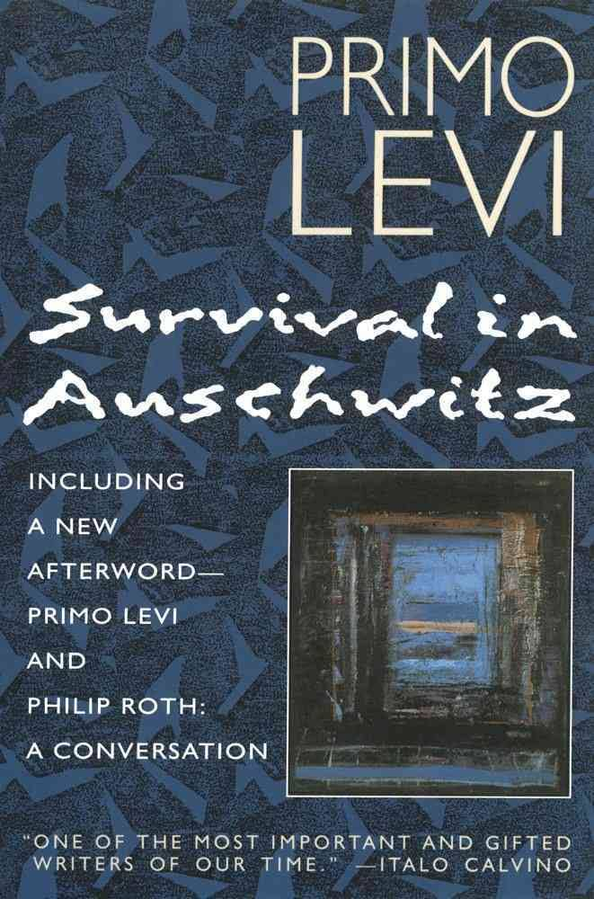
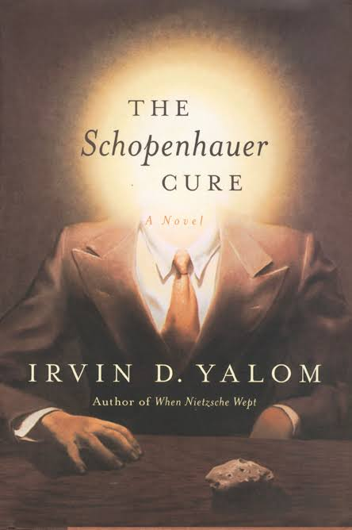

| The Stranger
L’Étranger is a 1942 novel by French author Albert Camus. Its theme and outlook are often cited as examples of Camus' philosophy of the absurd and existentialism, though Camus personally rejected the latter label. |
|
|  |
The Schopenhauer cureJulius Hertzfeld is a distinguished psychotherapist when a sudden confrontation with his own mortality forces him to re-examine his life and work. Has he really made an enduring difference to the lives of his patients? And what about those he's failed Ð what has happened to them? His attempt to make sense of the past places him on a collision course with former patient Philip Slate a handsome but arrogant and misanthropic sex addict whom he had treated, unsuccessfully, 23 years before.. |
|  |
Survival In AuschwitzPrimo Levi's account of his time as a prisoner of Auschwitz begins with his arrest as a Partisan in fascist Italy. After being interned in a detention camp, Levi is sent on a five day journey in a transport wagon to Auschwitz Birkenau, arriving in February 1944. |